Anomaly
An Anomaly is a mysterious discovery found by Science Ships during system surveys. Each anomaly outcome can only take place once, and once each outcome of an anomaly has taken place, the anomaly can no longer be found again by the same empire. Discovered anomalies are displayed on the galaxy map when a science ship is selected or the Detailed Map Mode is turned on.
If an anomaly adds a deposit while the celestial object has a deposit that requires a different kind of station, the original deposit is removed. If an anomaly would give the scientist an expertise trait they already have, the scientist will gain 200 experience instead.
|
|
Available only with the Grand Archive DLC enabled. |
Many anomalies will also give a specimen when investigated.
Base game anomalies
| Anomaly | Level | Celestial object | Empire | Possible outcomes | |
|---|---|---|---|---|---|
| A Strange Resonance | Any Star |
|
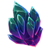 Resonant Diffusion Crystal | ||
| Improbable Orbit | Any Star |
|
Extra-dimensional Ceramic Pot | ||
| Light Phenomenon | Any Star |
|
|||
| Distress Signal | Any Planet |
|
|||
| Playful Ruins | Any Planet |
|
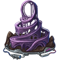 Spiraling Attraction | ||
| A Feel for Steel | Any Habitable Planet |
|
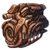 Decayed Megathrusters | ||
| A Glint of Metal | 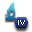 |
Any Habitable Planet |
|
||
| But They're Cute! | Any Habitable Planet |
|
|||
| Parked | Any Habitable Planet |
|
|||
| Planetary Scars | Any Habitable Planet |
|
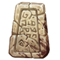 Warning Monolith | ||
| Rubiconian Shores | 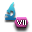 |
Any Habitable Planet |
|
||
| Steamrolled | Any Habitable Planet |
|
|||
| What Hums in the Night | Any Habitable Planet |
|
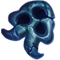 Plastic Toy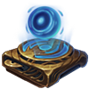 The Orchestra | ||
| Ancient Shipyard | 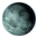 |
|
|||
| Asteroid in Orbit |
|
||||
| Atmospheric Anomaly |
|
||||
| Life Signs |
|
Ammoniaphytus 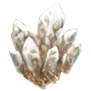 Crystalose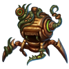 Toxic Bio-Engine | |||
| Doppler Effect |
|
||||
| Massive Impact |
|
||||
| Monoliths |
|
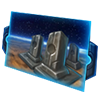 Cenotaph Display | |||
| Peculiar Crater | |||||
| Projecting |
|
||||
| Signs of Battle |
|
||||
| Solar Sailer |
|
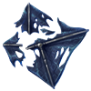 Torn Solar Sail | |||
| Space Station |
|
||||
| Strange Mountain Formation |
|
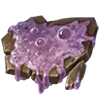 Enormous Scrambled Albumen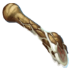 Massive Metatarsal | |||
| Strange Readings |
|
||||
| Surface Beacon |
|
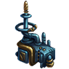 Ancient Mining Transmitter | |||
| Surface Writing |
|
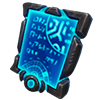 Tales of a Mercenary | |||
| Unidentified Object |
|
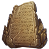 Index of Knowledge | |||
| Unusual Energy Readings |
|
Intergalactic Projectile | |||
| Weak Signal |
|
||||
| Confounding Cosmic Rays | 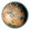 |
|
|||
| Possible Inhabitants |
|
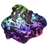 High Geode | |||
| Spotty Greenery |
|
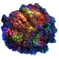 Hyperfertile Soil | |||
| Icy Plains | |||||
| Arid and Abandoned | 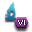 |
|
|||
| Arid Wastes |
|
||||
| Crash Site | 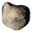 Asteroid |
|
|||
| Abandoned Station | Asteroid |
|
Curator Survey | ||
| Alien Machine | Asteroid |
|
|||
| An Asteroid, Carved | Asteroid |
|
|||
| An Invitation | Asteroid |
|
|||
| Ancient Battlefield | Asteroid |
|
|||
| Asteroid Collision | Asteroid |
|
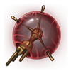 Ancient Heat Sensor | ||
| Asteroid Waves | Asteroid |
|
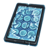 DNA Archive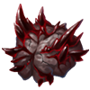 Mineralized Brain | ||
| Astonishing Asteroids | Asteroid |
|
|||
| Covered in Debris | Asteroid |
|
|||
| Crashed Ship | Asteroid |
|
|||
| Dimensional Disturbance | Asteroid |
|
|||
| Docking Hatch | Asteroid |
|
|||
| Dustbowl | Asteroid |
|
Planet-Pusher | ||
| Energy Emissions | Asteroid |
|
|||
| Lost Soul | Asteroid |
|
Castaway Robot | ||
| Mind the Minerals | Asteroid |
|
|||
| Mystical | Asteroid |
|
"Tree of Life" Sample | ||
| Mineral Cluster | Asteroid |
|
Last Copy of The Prince | ||
| Odd Readings | Asteroid |
|
First Astronaut | ||
| Orbital Speed Demon | Asteroid |
|
|||
| Radiating Asteroid | Asteroid |
|
Wormhole Anchor | ||
| Radiation Spikes | Asteroid |
|
|||
| Unknown Origin | Asteroid |
|
Asteroid Fossils Coprolite | ||
| Unknown Insides | Asteroid |
|
|||
| Unusual Temporal Fluctuations | Asteroid |
|
|||
| A Curious Signal |
|
||||
| Looking Down | |||||
| Mysterious Rock Formation |
|
||||
| Strange Emissions |
|
Mutated 'Fumongus' | |||
| Winking |
|
||||
| Continental Findings | Super Roots | ||||
| Buried in the Sand | Desert |
|
|||
| Desolate Sands | Desert | ||||
| Dunes | Desert |
|
|||
| A Cold Discovery |
|
||||
| Cold Hard Potential |
|
Scientific Treatise of Telisa | |||
| Cold Wastes |
|
||||
| Ice Lit | |||||
| Mysterious Heat |
|
||||
| Something Smells |
|
Olfactodrive | |||
| Minesweeper | |||||
| Paradise Anticipated |
|
||||
| Aerostat Structures | Gas Giant |
|
|||
| Atmospheric Object | Gas Giant |
|
|||
| Atmospheric Storms | Gas Giant | ||||
| Cargo Pod | Gas Giant |
|
Alien Jewelry Loopmail | ||
| Clouds Dance | Gas Giant |
|
|||
| Gas Giant Ship | Gas Giant |
|
|||
| Ice Giant | Gas Giant |
|
|||
| Promising Moon | Gas Giant |
|
|||
| Space Debris | Gas Giant |
|
|||
| Terminal Orbit | Gas Giant |
|
|||
| Heated Rhythm |
|
||||
| Drops in the Ocean |
|
||||
| Kaleidoscopic |
|
Polymer Waterweave | |||
| Radioactive Planet | Gammabloom | ||||
| Spontaneous Explosions | |||||
| The Winter of the Fallen |
|
||||
| Pigment Poison |
|
Purple Rainaissance | |||
| Poison-coated |
|
Reactive Rock | |||
| Signs of Former Habitation |
|
||||
| Toxic Construction |
|
||||
| Toxicity | |||||
| Among the Vines and Trees | Manna Fruit | ||||
| Tropical Oddities | Acidic Spores | ||||
| Scurrying |
|
Crimson Nimkips | |||
| Wooden Hegemony |
|
||||
| Rainbow in the Dark | Black Hole |
|
Black Hole Chromatic Anomaly | ||
| Astral Scar | Astral Scar |
|
{kind=link}
{kind=link}
{kind=link}
{kind=link}
{kind=link}
{kind=link}
{kind=link}
{kind=link}
{kind=link}
{kind=link}
{kind=link}
{kind=link}
{kind=link}
{kind=link}
Unique anomalies
The following anomalies can only be discovered once per game, by the first empire finding them. They have only one outcome
| Anomaly | Level | Celestial object | Empire | Possible outcomes | |
|---|---|---|---|---|---|
| On Solar Sails | Any Star or Planet | Message in a Bottle archaeological site | |||
| The Orb | Any Planet | Choose between scaled |
|||
| Signs of Ancient Life | Any Habitable Planet | Enigmatic Robot planetary feature and 100-1000 |
Remains of Robot | ||
| Rapid Desertification | Rapid Desertification event chain | ||||
| Spacecraft Remains | Asteroid | Scientist leader and either Automated Exploration Protocols, Synchronized Defenses or Subspace Sensors technology | |||
| On the Barren Plains | Limbo event chain | Alien Brain Scans | |||
| Thin Ice | Special project to gain +1 |
||||
| Gas Giant Signal | Gas Giant | Gas Giant Signal event chain | |||
| Floating Value | Choice between 150-2000 |
||||
| Impossible Organism | Impossible Organism event chain | Nivlac Declaration of Animosity Nivlac Declaration of Friendship |
Human anomalies
If the Sol system is present in the galaxy two special anomalies can appear once per game. If a human empire investigates them it will gain 40-100  Influence.
Influence.
- Debris Field can appear on a random Asteroid. Investigating it will discover the Pioneer 11 probe. If the empire is not human and the
 Grand Archive DLC is installed it has a 50% chance to gain the Aluminium Plaque specimen. In either case it will receive the following choices:
Grand Archive DLC is installed it has a 50% chance to gain the Aluminium Plaque specimen. In either case it will receive the following choices:
- Gain a moderate amount of
 Engineering Research while the science ship scientist gains 200 Experience. The location of the Sol system is added to the situation log. Entering the system will grant 80-175
Engineering Research while the science ship scientist gains 200 Experience. The location of the Sol system is added to the situation log. Entering the system will grant 80-175  Influence.
Influence. - Gain a moderate amount of Engineering Research.
- Gain 40-100 Influence if Xenophobe.
- Gain a moderate amount of
- A Lush Planet can appear on a random
 Continental or
Continental or  Tropical planet. Investigating it will discover the Voyager golden record.
Tropical planet. Investigating it will discover the Voyager golden record.
- If the empire is human it will gain a moderate amount of Engineering Research and if the Grand Archive DLC is installed it will also gain the Golden Phonograph Record specimen.
- If the empire is not human, it will receive a special project that takes 60 days and when completed will give the planet the
 Cunning Flora modifier and if the Grand Archive DLC is installed will also give the Symbiotica specimen.
Cunning Flora modifier and if the Grand Archive DLC is installed will also give the Symbiotica specimen. - If year is at least 2440, there is a 50% chance the anomaly will instead give a very large amount of
 Society Research.
Society Research.
- If the empire is human it will gain a moderate amount of
Distant Stars anomalies
|
|
Available only with the Distant Stars DLC enabled. |
Distant Stars anomalies have only one possible outcome.
| Anomaly | Level | Celestial object | Reward | Requirements | |
|---|---|---|---|---|---|
| Heavy Readings | Any Star | Special project to gain |
System has a Gateway | ||
| Interference | Any Star | If an L-Gate has been encountered and the L-Cluster hasn't been accessed there is a 30% chance to gain an L-Gate Insight in 10 days |
|||
| Metallic Sands | Any Planet |
|
|||
| Supply Ship Wreckage | Any Planet | 300 |
Scorched World Heralds |
||
| Attractive Magnetism | Any Habitable Planet | ||||
| Bizarre Blanket | Any Habitable Planet | Invasive Exofungus | |||
| Isolated Ruin | Any Habitable Planet | Zone A planetary feature
If an L-Gate has been encountered and the L-Cluster hasn't been accessed there is a 30% chance to gain an L-Gate Insight in 10 days |
|||
| Megaflora | Any Habitable Planet | Carnivorous Megaflora | |||
| Peculiar Patterns | Any Habitable Planet | ||||
| Resonant Crystals | Any Habitable Planet | Vibrating Crystal | |||
| Overgrown Ruins | Any Habitable Planet |
|
|||
| Deep Caverns | Any Uninhabitable Planet | +1 |
|||
| Webwork | Any Uninhabitable Planet | +3 |
Electric Life | ||
| Silent Behemoth | Any Uninhabitable Moon | Mantle of the Dead God | |||
| Secret Heart | Asteroid | +1 |
|||
| Unscannable Object | Asteroid |
|
Sonically Reflective Prism | ||
| Waterless Canyons | +4 |
||||
| Gray Goo | Nanite Sludge | ||||
| Inconsistent Readings | +3 |
Hot Ice | |||
| Metallic Crystal Formations |
|
||||
| Movement in the Clouds | Gas Giant | Lost Amoeba event chain | |||
| Solid Core | Gas Giant |
|
|||
| Volcanic Vents | +1 |
||||
| Deep Tunnels | Flooded Settlement Mound | ||||
| Tomb World |
|
||||
| Tomb World | Special project to gain 20% progress towards the next lasers or armor technology | ||||
| Impenetrable Clouds | +3 |
Metallic Snow | |||
| Fleet Signatures | Black Hole | +3 |
|||
| Heavy Pulse | Class F Star | +4 |
Cosmic Diamond Fragment |
{kind=link}
{kind=link}
{kind=link}
Unique anomalies
The following anomalies can only be discovered once per game, by the first empire finding them.
| Anomaly | Level | Celestial object | Reward | Requirements |
|---|---|---|---|---|
| Irregular Energy Emissions | Any Star | Scaled Unity or special project to give a scientist the |
||
| Encrypted Transmission | Any Planet | +1 L-Gate Insight | System has a Gateway or L-Gate | |
| Abandoned Settlements | Any Habitable Planet | |||
| Alien Life | Any Habitable Planet | Savage Wildlands planetary feature and |
||
| Corrupt Survey Data | Any Habitable Planet | |||
| Unusual Moon | Any Uninhabitable Moon | +3 |
||
| Armed Vessel | Asteroid | 50 |
||
| Alien Activity | ||||
| Ancient Hulk | Gas Giant |
|
| |
| Mysterious Construct | Special project to gain the S875.1 Warform renowned paragon if AI Policy is not Outlawed | |||
| Ship Fragments | Neutron Star |
|
{kind=link}
{kind=link}
Shadows of the Shroud anomalies
|
|
Available only with the Shadows of the Shroud DLC enabled. |
Shadows of the Shroud anomalies have only one possible outcome.
{kind=link}
{kind=link}
{kind=link}
{kind=link}
{kind=link}
Infernals anomalies
|
|
Available only with the Infernals DLC enabled. |
Infernals anomalies have only one possible outcome.
{kind=link}
Cosmic Storm anomalies
|
|
Available only with the Cosmic Storms DLC enabled. |
The following anomalies can only be created when a cosmic storm disappears from the system. All of them have only one possible outcome.
Astral Harvesting anomalies
|
|
Available only with the Astral Planes DLC enabled. |
The following anomalies can only appear once per game after the  Astral Harvesting technology has been researched and only if the system does not contain an astral scar or astral rift.
Astral Harvesting technology has been researched and only if the system does not contain an astral scar or astral rift.
- Bright Object Detected can appear on a random asteroid. Investigating it will bring the option to pay 1000
 Energy to spawn the Entertainment Nexus astral rift. Alternative empires that are not
Energy to spawn the Entertainment Nexus astral rift. Alternative empires that are not  Gestalt Consciousness can gain 500 Energy and +10
Gestalt Consciousness can gain 500 Energy and +10  Trade Value deposit and empires that are Gestalt Consciousness can gain 140-160
Trade Value deposit and empires that are Gestalt Consciousness can gain 140-160  Astral Threads and 250
Astral Threads and 250  Minerals and
Minerals and  Alloys.
Alloys. - Black Hole Instability can appear on a random black hole. Investigating it will bring the option to gain 40-60 Astral Threads and a random astral rift or +3 Astral Threads deposit and replace it with an astral rift and 140-160 Astral Threads in 3-7 years.
Weapon Trails
|
|
Available only with the Ancient Relics DLC enabled. |
The level 4 anomaly Weapon Trails can be discovered on any celestial object. Investigating the anomaly will bring an optional special project that will reveal a new system 2-4 hyperlanes away from the anomaly. The system does not have any deposits but contains a  Relic World with the Kleptomaniac Rats archaeological site. The anomaly can only appear once per game.
Relic World with the Kleptomaniac Rats archaeological site. The anomaly can only appear once per game.
Spiky Readings
|
|
Available only with the Galactic Paragons DLC enabled. |
The level 2 anomaly Spiky Readings can be discovered on any habitable planet with pre-sapients and will add the  Psionic trait to the pre-sapient species when discovered. Investigating the anomaly and choosing to continue to investigate will bring a special project that costs 1000
Psionic trait to the pre-sapient species when discovered. Investigating the anomaly and choosing to continue to investigate will bring a special project that costs 1000  Society Research, or 500 if the empire is Spiritualist, and unlocks a second special project. Finishing the second special project will ring the option to pay various amounts of
Society Research, or 500 if the empire is Spiritualist, and unlocks a second special project. Finishing the second special project will ring the option to pay various amounts of  Energy. Agreeing will unlock The Beholder legendary paragon. The anomaly can only appear once per game.
Energy. Agreeing will unlock The Beholder legendary paragon. The anomaly can only appear once per game.
Crimson Coverage
|
|
Available only with the Cosmic Storms DLC enabled. |
Crimson Coverage is a level 3 anomaly that can spawn for biological empires on planets from the same class as the homeworld. Investigating it will give a special project that takes 180 days to complete. Completing the special projects brings a choice between a small amount of  Society Research or the
Society Research or the  Crimson Crawlers planet modifier.
Crimson Crawlers planet modifier.
{kind=link}
References
| Exploration | Exploration • FTL • Unique systems • L-Cluster • Pre-FTL species • Fallen empire • Spaceborne aliens • Enclaves • Guardians • Marauders • Caravaneers |
| Celestial bodies | Celestial body • Colonization • Planetary features • Planet modifiers |
| Discovery | Discovery • Anomaly • Archaeological site • Astral rift • Relics • Collection |
| Species | Species • Pop modification • Biological traits • Machine traits • Population • Species rights • Ethics |
| Leaders | Leader • Common leader traits • Commander traits • Official traits • Scientist traits • Paragons |
| Governance | Empire • Origin • Government • Civics • Council • Policies • Edicts • Factions • Traditions • Ascension perks • Ambition • Situations |
| Economy | Resources • Planetary management • Districts • Jobs • Designation • Trade • Megastructures • Waystation |
| Buildings | Planet capital • Common buildings • Planet unique • Empire unique • Holdings |
| Ships | Ship • Arkship • Ship designer • Core components • Weapon components • Utility components • Mutations • Offensive mutations |
| Technology | Technology • Physics research • Society research • Engineering research |
| Diplomacy | Diplomacy • Relations • Galactic community • Federations • Subject empires • Intelligence • Contracts • AI personalities |
| Warfare | Warfare • Space warfare • Land warfare • Starbase • Crisis |
| Others | Events • The Shroud • Preset empires • AI players • Stat modifiers • Console commands • Easter eggs |